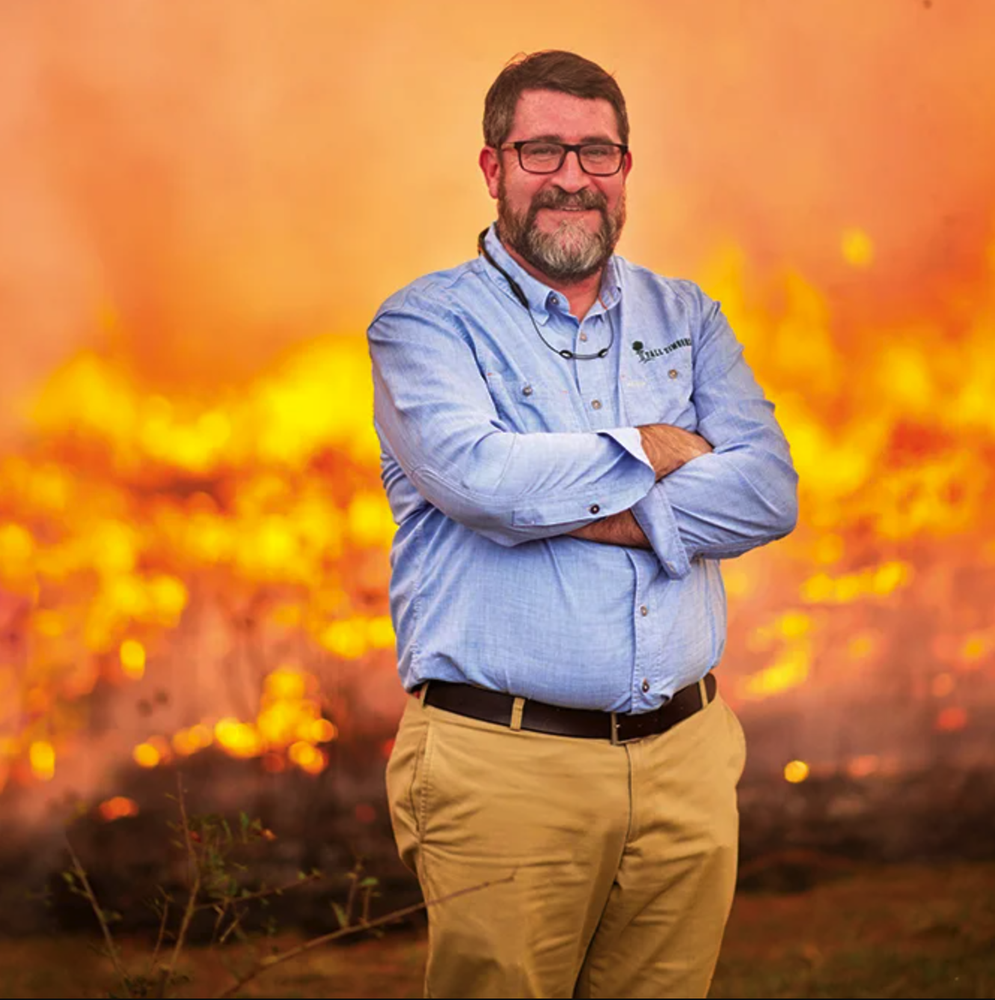

Invited Speakers

Dr. Altintas is the Chief Data Science Officer of the San Diego Supercomputer Center (SDSC) and
the Founding Director of the Societal Computing and Innovation Lab. Since joining SDSC in 2001,
she has been a principal investigator and a technical leader in a wide range of cross-disciplinary
projects. She holds a PhD degree from the University of Amsterdam.

Dr. Yaghoobian is an Associate Professor of Mechanical Engineering at Florida State University and
an Associate of the Geophysical Fluid Dynamics Institute. As NSF CAREER awardee, her research focuses on
fire dynamics, land-atmosphere interactions, environmental fluid dynamics, turbulence, and computational modeling.

Dr. Zhao is an associate professor in Transportation Engineering at the University of Florida.
She received Early-Career Research Fellowship of NASEM's Gulf Research Program. Her research has been
supported by the U.S. Department of Transportation, the National Institute of Standards and Technology,
and the U.S. Geological Survey, etc.

Dr. Morgan Varner is Director of Research and Senior Scientist at Tall Timbers Research Station in Tallahassee, FL.
Dr. Varner has served on the Editorial Board of Fire Ecology since 2012 and led several special issues. Before joining
Tall Timbers, Dr. Varner was a professor at Virginia Tech, Mississippi State, and Cal Poly- Humboldt.